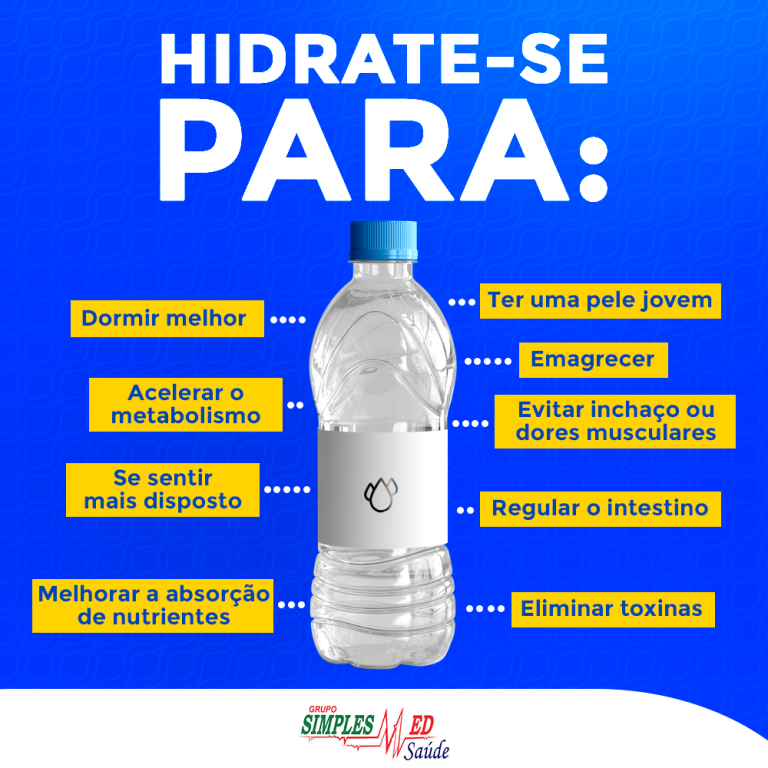
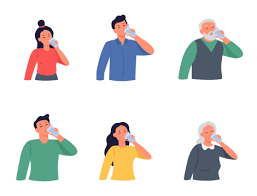

A Importância da Hidratação
A hidratação é essencial para a manutenção da saúde e do bom funcionamento do corpo. A água é vital para quase todas as funções biológicas, e manter-se bem hidratado é crucial para o desempenho físico e mental. Aqui estão alguns pontos importantes sobre a hidratação:
- Regulação da Temperatura Corporal: A água ajuda a regular a temperatura do corpo, especialmente durante atividades físicas ou em climas quentes, através da transpiração.
- Transporte de Nutrientes e Oxigênio: A água é o principal componente do sangue, que transporta nutrientes e oxigênio para as células do corpo.
- Auxílio na Digestão: A água é fundamental para o funcionamento do sistema digestivo, ajudando na digestão dos alimentos e na absorção dos nutrientes.
- Eliminação de Toxinas: A hidratação adequada auxilia os rins a filtrar e eliminar toxinas e resíduos do corpo através da urina.
- Saúde da Pele: Manter-se hidratado ajuda a manter a pele saudável, melhorando sua elasticidade e aparência, além de prevenir o ressecamento.
- Função Cerebral: A desidratação pode afetar a função cognitiva, causando dificuldades de concentração, memória e até alterações de humor.
- Manutenção das Articulações e Músculos: A água é um componente crucial do líquido sinovial, que lubrifica as articulações, além de evitar cãibras e ajudar na flexibilidade muscular.
Sinais de Desidratação
- Sede Excessiva: Um dos primeiros sinais de que seu corpo precisa de mais água.
- Urina Escura: A urina deve ser clara ou de cor amarelo-claro. Urina escura pode ser um sinal de desidratação.
- Fadiga: Sentir-se cansado sem motivo aparente pode indicar falta de hidratação.
- Tontura ou Dor de Cabeça: Estes podem ser sinais de desidratação, especialmente após a atividade física.
- Boca Seca: A falta de saliva é um indicativo de que o corpo precisa de mais água.
- Pele Seca: A desidratação pode causar ressecamento da pele, que perde a sua elasticidade.
Dicas para Manter-se Hidratado
- Beba Água Regularmente: Não espere sentir sede para beber água. Tenha uma garrafa de água por perto e beba pequenas quantidades ao longo do dia.
- Adapte-se ao Clima e à Atividade Física: Em dias quentes ou durante exercícios, aumente a ingestão de líquidos para compensar a perda de água através do suor.
- Consuma Alimentos Hidratantes: Frutas e vegetais com alto teor de água, como melancia, pepino, laranja e morango, podem complementar a ingestão de líquidos.
- Evite Bebidas Desidratantes: Bebidas alcoólicas e com cafeína podem contribuir para a desidratação. Se consumi-las, aumente a ingestão de água para compensar.
- Ajuste a Hidratação para Necessidades Específicas: Gravidez, amamentação, certas condições de saúde ou medicamentos podem aumentar a necessidade de água. Consulte um profissional de saúde para orientações específicas.
- Monitorize a Cor da Urina: Usar a cor da urina como um guia pode ajudar a ajustar sua ingestão de água ao longo do dia.
- Comece o Dia com Água: Beber um copo de água ao acordar ajuda a reidratar o corpo após horas sem líquidos.
- Use Alarmes ou Apps de Hidratação: Se você tem dificuldade em lembrar de beber água, use alarmes ou aplicativos que enviam lembretes ao longo do dia.

Mantenha-se Hidratado
Manter-se hidratado é essencial para a saúde e o bem-estar geral. A água desempenha um papel fundamental em muitas funções corporais, e a desidratação pode ter consequências sérias para a saúde. Adote hábitos de hidratação adequados e preste atenção aos sinais do seu corpo.
